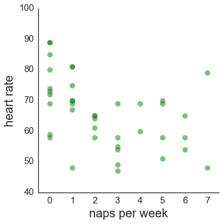
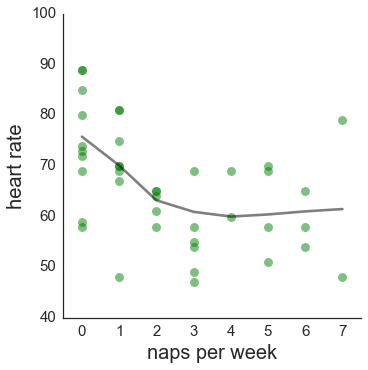
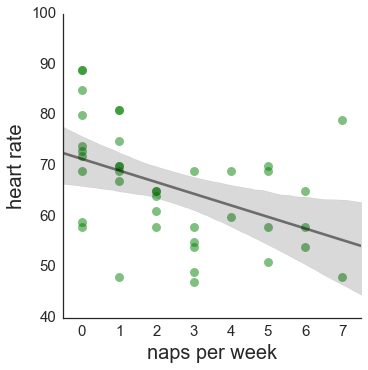
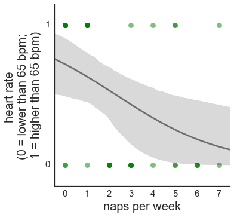
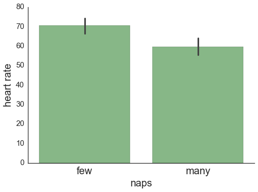
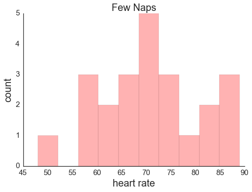
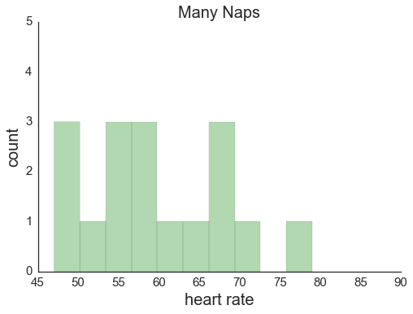
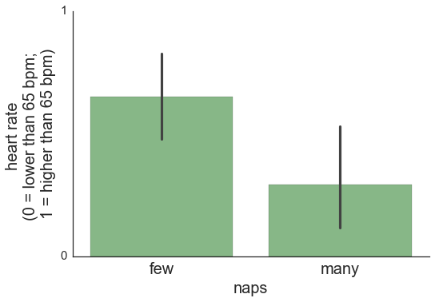
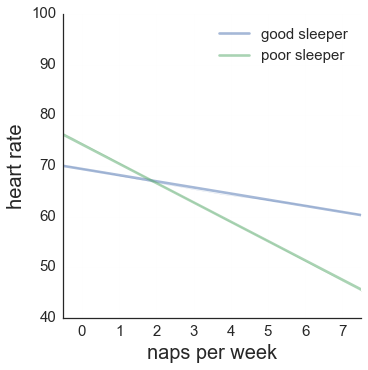
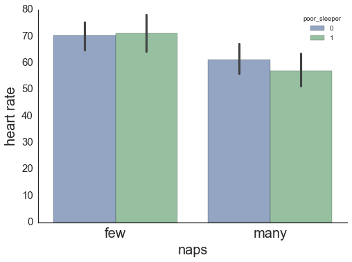

Core Research Ideas
Part II: Tools for Analyzing IV-DV Relationships
1. Analyze the relationship bewteen IV and DV in isolation.
Is the IV continuous or categorical? Is the DV continous or catageorical? These disctinctions will lead you to different tools for visualizing the IV-DV relationship.
Continuous IV with a Continuous DV
- Create a scatterplot. To see the relationship between the two variables. Also helps to see outliers, issues with distributions, non-linear relationships .

.
- IV on x-axis. DV on y-axis.
- If too many data points to see pattern easily:
- If data points overlap exactly, this will make difficult to see patterns. “Jitter” the data points.
- Plot histogram of IV and histrogram of DV to see distribution of each variable. Helps to think about quirts of relationship between the two variables, e.g., not much variacnce in the IV or DV, perhaps possible floor/ceiling effect?
- Plot regression line going through the scatterplot.
- Plot a lowess line - decent idea as first go-through because helps see non-linear relationships. Is this line linear or close to linear (i.e. straight) or non-linear?

- Plot linear (i.e., straight) line.

- Pay attention to whether an outlier data point or two might be inflating or deflating the slope of the regression line.
- Get p-value for relationship between IV and DV.
- Enter only the IV and DV into linear regression.
- Answers Q: is this relationshp big and consistent enough to trust that it’s real and not just the result of chance?
- Good rule of thumb: if the p-value < .01, take it seriously, if p > .01, be very suspicous that the pattern is just the result of chance. (Frequently people use p < .05 as the threshold for “significance.” This is too liberal. (The default is to make the p-value should be “two-tailed” (vs. one-tailed), though you shouldn’t have to worry about this because two-tailed is almost always the default in software packages.)
- The actual number of the p-value isn’t intuitive. E.g., p = .01 doesn’t mean anything intuitive to a normal person. It means a very specific statistical thing that I’ll skip here so I don’t confuse things. Many people (including seasoned researchers) think you can get the probablity that an effect/relationship is real by substracing the p-value from 1. E.g., they think p = .01 means there is a 99% chance an effect is real, or likewise think that p = .05 means there is a 95% chance an effect is real. THIS IS INCORRECT -- YOU DO NOT GET THE PROBABILTY THAT AN EFFECT IS REAL BY SUBSTRACTING THE P-VALUE FROM 1. A formula does exist, though, to roughly translate the p-value into chance/probability that an effect is real. I can give you that later with more explanations.
Continuous IV with a Categorical DV
- IV on x-axis. DV on y-axis.
- Code DV 0 (absence of whatever it is) vs. 1 (presence of whatever it is)
- Lowess line
- Logistic line.
- The logistic line is used when the DV is dichotous--coded either 0 or 1. The logistic line keeps within the confines of 0 and 1. Whereas if you plotted a regular linear regression line, it might go higher and/or lower than 1 or 0, respectively. This woudn’t make sense because there aren’t any real values below 0 or higher than 1.
- In the graph below I turned heart rate into a dichotomous variable by coding it a 0 if heart rate is below 65 and coding it a 1 if above 65. So, the logistic line below essentially gives you the probability of having heart rate higher than 65 at every level of naps. E.g., it’s saying that people who nap once a week have a probability of about .75 of having a heart rate above 65. People who nap 6 times a week have a probabiliyt of aournd .15 of having a heart rate above 65.

- Get p-value from logistic regression.
Categorical IV with a Continuous DV
- Code IV as 0 (absence or low value) vs. 1 (presence or higher value)
- IV on x-axis. DV on y-axis.
- Include 95% CIs on each bar (95% CIs are 2 standard errors above and below the mean. Standard errors are in part based on the standard deviation but are different. Standard errors shrink as the sample size increases.). Non-overlapping CIs indiate p-value < .01 (and so overlapping CIs indicate p > .01). In the graph below, the CI bars don’t overlap (i.e., the bottom of the “few” bar on the left is above the top of the “many” bar on the right). So the difference is statistically significant at p < .01.

- Visualize the distribution of the DV at each level of the IV.
- If the number of observations (e.g., people) is different between the two levels of the IV, then helpful to substitue the proportion of observations for the y axis instead of the raw count. This will make it easier to compare distributions of the DV between each level of the IV.
- Could do this with overlapping histograms
- Pay attention to whether outlier data points might be inflating or deflating the mean and/or CIs on a bar.

- Get p-value with linear regression
Categorical IV with a Categorical DV
- Code IV as 0 vs. 1; code DV as 0 vs. 1.
- IV on x-axis. DV on y-axis.
- In the graph below, the CI bars do overlap. So the difference is not statistically significant (p > .01.)

- Get p-value with logistic regression
2. Analyze the relationship bewteen IV and DV while controlling for (i.e., holding constant) potential confounds.
- Enter IV and DV into regression along with confound(s).
- Does the IV still relate to the DV at p < .01? If so, this is evidence that the IV relates to the DV while holding the counfound(s) constant. I.e., the relationship between IV and DV that can’t be completely accounted for by the alternative explanation presented by the confound. The more you can account for alterantive explanations in this way, the more likely the hypothesized explanation that the IV causes/affects the DV becomes.
- Careful not to confuse mediators with confounds. If you enter a mediator into the regression (and so control for it), it will wipe out the effect of the IV on the DV and lead you to falsly conclude that the IV doesn’t cause the DV.
- The relationship between the IV and DV while controlling for confounds can be visualized/plotted. We can talk about this later.
- Select a subset of data at just one level of a confound. Then enter IV and DV into regression using this subset of data. If there is still a relationship (p < .01) between IV and DV at particularly levels of counfounds, then more confidence that the relationship can’t be fully accounted for by the alternative explanation prsented by the confound.
3. Analyze whether other variables moderate/alter the relationship bewteen IV and DV.
- The easiest way to figure out if a variable is moderating the IV-DV relationship: Create a new interaction variable by multiplying the IV and the mediator. Enter the IV, the mediator, and the interaction variable into the regression as predictor. If the interaction term is significant (p < .01) is suggests that the relationship bewteen IV and the DV varies at different levels of the moderator.
- Explore how the IV-DV relationship changes at different levels of the moderator with visualization.
- If the moderator is continuous, split the moderator into three equal portions (tertile split) or into two equal portions (median split).
- Visualize the IV-DV relationship (as above) separately for each split of the moderator.
- As example, let’s say we asked people about whether they sleep well at night, yes or no. Using this as the moderator, the graphs below show that the inverse relationship betwen naps and heart rate is stronger for those who sleep poorly at night than for those who sleep well at night.


- When the moderator is continous, can also examine IV-DV relationship at 1 SD above and below the mean of the moderator (Aiken & West approach). This arguably retains more information than when using a median or tertile split on the moderator. Can explain at another time.
Reading
P-value stuff: